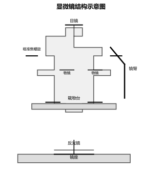
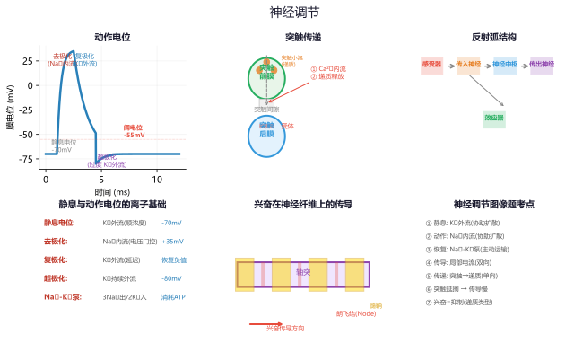
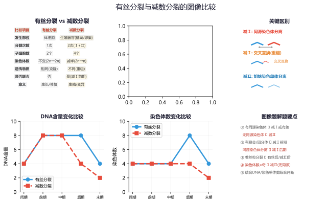

🧬 初中生物常考模型
细胞·遗传·生态系统·人体生理·实验探究·健康免疫·中考全覆盖
一、显微镜与细胞
🔬 显微镜使用模型
操作步骤七步：取镜安放→对光（低倍物镜+大光圈）→放置玻片→调粗准焦（下看）→看目镜调粗准焦→调细准焦→观察
成像特点：倒像（上下左右全部相反），玻片移动方向与物像移动方向相反
放大倍数：目镜×物镜。倍数越大→视野越暗、细胞越大、数量越少
污点判断法：移动玻片污点动→在玻片；转动目镜污点动→在目镜；都不动→在物镜
物镜与玻片距离：倍率越大，镜头离玻片越近
成像特点：倒像（上下左右全部相反），玻片移动方向与物像移动方向相反
放大倍数：目镜×物镜。倍数越大→视野越暗、细胞越大、数量越少
污点判断法：移动玻片污点动→在玻片；转动目镜污点动→在目镜；都不动→在物镜
物镜与玻片距离：倍率越大，镜头离玻片越近

放大倍数 = 目镜倍数 × 物镜倍数 | 低倍→视野亮、细胞小、数量多
🔬 细胞结构模型
| 结构 | 植物细胞 | 动物细胞 | 功能 |
|---|---|---|---|
| 细胞壁 | ✔ | ✘ | 支持和保护（全透性） |
| 细胞膜 | ✔ | ✔ | 控制物质进出（选择性） |
| 细胞质 | ✔ | ✔ | 进行生命活动的场所 |
| 细胞核 | ✔ | ✔ | 遗传信息库，控制生命活动 |
| 叶绿体 | ✔ | ✘ | 光合作用的场所 |
| 线粒体 | ✔ | ✔ | 呼吸作用释放能量 |
| 液泡 | ✔ | ✘ | 储存物质，维持渗透压 |

🔬 细胞分裂与分化
细胞分裂过程：核分裂→质分裂→形成新细胞壁（植物）
染色体变化：复制→均分→两个新细胞与原细胞染色体形态数目相同
分裂意义：使细胞数量增多（生长、修复、繁殖）
细胞分化：形成不同组织（形态结构功能发生差异性变化）
组织类型：植物（保护、营养、分生、输导、机械）；动物（上皮、肌肉、神经、结缔）
染色体变化：复制→均分→两个新细胞与原细胞染色体形态数目相同
分裂意义：使细胞数量增多（生长、修复、繁殖）
细胞分化：形成不同组织（形态结构功能发生差异性变化）
组织类型：植物（保护、营养、分生、输导、机械）；动物（上皮、肌肉、神经、结缔）

分裂：1→2→4→8（指数增长） | 分化：同种细胞→不同组织
例题 1：使用显微镜观察时，目镜为10×、物镜为40×，则物像被放大多少倍？若视野中细胞数量为4个，换用10×物镜后视野中约有多少个细胞？
解：放大倍数=10×40=400倍。放大倍数与视野大小成反比，与细胞数量成反比。
解：放大倍数=10×40=400倍。放大倍数与视野大小成反比，与细胞数量成反比。
400倍。换用10×物镜后，放大倍数变为100倍（缩小到原来的1/4），视野面积变为原来的16倍，所以细胞数量约为4×16=64个。
例题 2：制作洋葱表皮细胞临时装片时，滴加的液体是什么？染色用的是什么试剂？
分析：制作植物细胞装片滴清水；制作动物细胞装片滴生理盐水。
分析：制作植物细胞装片滴清水；制作动物细胞装片滴生理盐水。
滴加清水（保持细胞正常形态）。染色用碘液（稀碘液），使细胞核着色便于观察。动物细胞装片滴生理盐水是为了维持渗透压。
练习 1：显微镜视野中出现了一个污点，移动玻片和转动目镜后污点均不动，污点最可能在哪个位置？
污点在物镜上。判断方法：移动玻片污点动→在玻片；转动目镜污点动→在目镜；都不动→在物镜。
练习 2：人的体细胞中有46条染色体，经过一次分裂后，两个新细胞中染色体数目各是多少？
各为46条。细胞分裂过程中，染色体先复制再均分，使新细胞与原细胞染色体数目保持一致。
二、生理与代谢（光合+呼吸）
🌿 光合作用与呼吸作用对比
| 光合作用 | 呼吸作用 | |
|---|---|---|
| 场所 | 叶绿体 | 线粒体 |
| 条件 | 光照下 | 时时刻刻 |
| 原料 | CO₂+H₂O | 有机物+O₂ |
| 产物 | 有机物+O₂ | CO₂+H₂O+能量 |
| 能量变化 | 光能→化学能（储存） | 化学能→其他能（释放） |

光合：CO₂+H₂O →光/叶绿体 有机物+O₂ | 呼吸：有机物+O₂ → CO₂+H₂O+能量
🌿 影响光合效率的因素
光照强度：在一定范围内，光照越强光合越强（但超过光饱和点不再增加）
CO₂浓度：在一定范围内，CO₂越多光合越强
温度：影响酶的活性，过高过低都会降低光合效率
增加光照/CO₂浓度→提高产量 低温低氧储存果蔬→抑制呼吸 植物夜晚→只有呼吸（不能进行光合）
CO₂浓度：在一定范围内，CO₂越多光合越强
温度：影响酶的活性，过高过低都会降低光合效率
增加光照/CO₂浓度→提高产量 低温低氧储存果蔬→抑制呼吸 植物夜晚→只有呼吸（不能进行光合）
例题 3：将一棵植物放在密闭玻璃罩内，光照下测得罩内CO₂浓度持续下降，这说明了什么？移入暗室后CO₂浓度上升，又说明了什么？
分析：CO₂浓度变化反映光合与呼吸的强弱对比。
分析：CO₂浓度变化反映光合与呼吸的强弱对比。
光照下CO₂浓度下降：说明光合>呼吸，植物从外界吸收CO₂。暗室中CO₂浓度上升：说明只有呼吸作用释放CO₂。光合速率=呼吸速率时的光照强度称为光补偿点。
例题 4：新疆哈密瓜比内地甜的原因是什么？
分析：从昼夜温差对光合和呼吸的影响角度回答。
分析：从昼夜温差对光合和呼吸的影响角度回答。
新疆地区白天光照强、温度高，光合作用强，制造有机物多；夜晚温度低，呼吸作用弱，有机物消耗少。因此有机物积累多，瓜果更甜。
练习 3：在密闭透明玻璃罩中放一盆植物和一只小白鼠，光照下小白鼠能正常存活吗？为什么？
能存活。植物光合作用释放O₂供小白鼠呼吸，小白鼠呼吸释放CO₂供植物光合作用，二者形成物质循环。
练习 4：为什么种子入库前要晒干？蔬菜低温冷藏的原理是什么？
晒干种子：减少水分→抑制呼吸作用→减少有机物消耗。低温冷藏：低温抑制酶的活性→降低呼吸速率→延长保鲜期。
三、人体生理（消化·循环·呼吸·泌尿·神经）
🍽️ 人体营养与消化
六大营养素：糖类（主要供能）、蛋白质（修复细胞）、脂肪（备用能源）、维生素（调节）、水、无机盐
消化系统：口腔（淀粉初步消化）→咽→食道→胃（蛋白质初步消化）→小肠（主要吸收）→大肠→肛门
消化腺：唾液腺（唾液淀粉酶）、胃腺（胃蛋白酶）、肝脏（胆汁，乳化脂肪）、胰腺（多种酶）、肠腺
小肠适于吸收的特点：长（5-6米）、大（皱襞+绒毛增大面积）、薄（壁薄易透过）、多（含多种消化液）
消化系统：口腔（淀粉初步消化）→咽→食道→胃（蛋白质初步消化）→小肠（主要吸收）→大肠→肛门
消化腺：唾液腺（唾液淀粉酶）、胃腺（胃蛋白酶）、肝脏（胆汁，乳化脂肪）、胰腺（多种酶）、肠腺
小肠适于吸收的特点：长（5-6米）、大（皱襞+绒毛增大面积）、薄（壁薄易透过）、多（含多种消化液）

🩸 血液循环模型
体循环：左心室→主动脉→全身毛细血管→上下腔静脉→右心房（动脉血变静脉血）
肺循环：右心室→肺动脉→肺毛细血管→肺静脉→左心房（静脉血变动脉血）
血液成分： 红细胞 含血红蛋白，运输O₂（含铁，缺铁贫血） 白细胞 吞噬病菌，防御（含量多→炎症） 血小板 止血凝血 血浆 运输营养和废物
血管三种： 动脉 壁厚弹性大，离心血流快 静脉 壁薄弹性小，回流有静脉瓣 毛细血管 单层细胞，连通最小动脉静脉
肺循环：右心室→肺动脉→肺毛细血管→肺静脉→左心房（静脉血变动脉血）
血液成分： 红细胞 含血红蛋白，运输O₂（含铁，缺铁贫血） 白细胞 吞噬病菌，防御（含量多→炎症） 血小板 止血凝血 血浆 运输营养和废物
血管三种： 动脉 壁厚弹性大，离心血流快 静脉 壁薄弹性小，回流有静脉瓣 毛细血管 单层细胞，连通最小动脉静脉
🌬️ 呼吸与泌尿
呼吸：吸气→膈肌收缩、膈顶下降、胸腔扩大→肺内压降低→气体入肺
气体交换：肺泡壁薄（单层细胞）+ 毛细血管壁薄 = 气体易通过（扩散作用）
尿液形成： 肾小球滤过 血细胞和大分子蛋白不能滤过→原尿 肾小管重吸收 全部葡萄糖、大部分水、部分无机盐→尿液
排尿意义：排出废物、调节水和无机盐平衡、维持组织细胞正常功能
气体交换：肺泡壁薄（单层细胞）+ 毛细血管壁薄 = 气体易通过（扩散作用）
尿液形成： 肾小球滤过 血细胞和大分子蛋白不能滤过→原尿 肾小管重吸收 全部葡萄糖、大部分水、部分无机盐→尿液
排尿意义：排出废物、调节水和无机盐平衡、维持组织细胞正常功能
🧠 神经调节模型
反射弧：感受器→传入神经→神经中枢（脊髓/脑）→传出神经→效应器（肌肉/腺体）
反射类型： 非条件反射 生来就有（膝跳反射、缩手反射、眨眼） 条件反射 后天形成（望梅止渴、谈虎色变）
大脑皮层功能区：运动中枢、感觉中枢、视觉中枢、听觉中枢、语言中枢
感觉器官：眼（晶状体+视网膜）、耳（鼓膜+耳蜗听小骨）
反射类型： 非条件反射 生来就有（膝跳反射、缩手反射、眨眼） 条件反射 后天形成（望梅止渴、谈虎色变）
大脑皮层功能区：运动中枢、感觉中枢、视觉中枢、听觉中枢、语言中枢
感觉器官：眼（晶状体+视网膜）、耳（鼓膜+耳蜗听小骨）

例题 5：某人手指被针刺后迅速缩回，请写出该反射的反射弧途径。
解：手指皮肤感受器→传入神经→脊髓（神经中枢）→传出神经→手臂肌肉（效应器）
解：手指皮肤感受器→传入神经→脊髓（神经中枢）→传出神经→手臂肌肉（效应器）
缩手反射是非条件反射，神经中枢在脊髓（不经过大脑），所以反应迅速。但人会同时感到疼痛，因为脊髓同时将信号上传至大脑皮层。
例题 6：某人因意外事故导致肾脏受损，尿液中出现红细胞和蛋白质，推测受损的结构可能是什么？
分析：正常尿液中不含血细胞和大分子蛋白质。
分析：正常尿液中不含血细胞和大分子蛋白质。
肾小球的滤过作用出现异常。正常情况下肾小球滤过时，血细胞和大分子蛋白质不能通过滤过膜进入原尿。肾小球受损后滤过膜通透性增大，导致血细胞和蛋白质进入尿液。
练习 5：一个人每分钟呼吸约16次，每次吸入约500mL空气，他一小时吸入的空气总量是多少？其中氧气约占多少？
每小时吸入空气体积=16×500×60=480000mL=480L。氧气约占空气体积的21%，即约100.8L。
练习 6：体循环和肺循环中，血液分别在哪个部位由动脉血变成静脉血、由静脉血变成动脉血？
体循环：在全身组织细胞处的毛细血管，O₂进入组织细胞、CO₂进入血液→动脉血变静脉血。
肺循环：在肺泡处的毛细血管，CO₂进入肺泡、O₂进入血液→静脉血变动脉血。
肺循环：在肺泡处的毛细血管，CO₂进入肺泡、O₂进入血液→静脉血变动脉血。
四、遗传与进化
🧬 遗传基本规律
基因与性状：基因控制生物性状。显性基因（A）控制显性性状，隐性基因（a）控制隐性性状
遗传图解（豌豆高矮茎）：
亲本：AA×aa → 子一代：Aa（全高茎）
Aa×Aa → 子二代：AA:Aa:aa=1:2:1，高:矮=3:1
禁止近亲结婚原因：近亲携带同种隐性致病基因概率大→纯合子概率大→患病率增加
性别决定：女性XX，男性XY。精子类型决定性别（X或Y），概率各50%
基因与染色体：基因在染色体上（DNA+蛋白质），体细胞中成对存在，生殖细胞中成单存在
遗传图解（豌豆高矮茎）：
亲本：AA×aa → 子一代：Aa（全高茎）
Aa×Aa → 子二代：AA:Aa:aa=1:2:1，高:矮=3:1
禁止近亲结婚原因：近亲携带同种隐性致病基因概率大→纯合子概率大→患病率增加
性别决定：女性XX，男性XY。精子类型决定性别（X或Y），概率各50%
基因与染色体：基因在染色体上（DNA+蛋白质），体细胞中成对存在，生殖细胞中成单存在

AA×aa→全Aa | Aa×Aa→3:1 | Aa×aa→1:1（测交）
🧬 基因的显隐性判断
判断技巧：
无中生有 父母都正常，生出患病孩子→患病为隐性
有中生无 父母都患病，生出正常孩子→患病为显性
基因组成推断： 隐性性状→基因型必定为aa；显性性状→基因型可能为AA或Aa
口诀：隐性纯合破题法——隐性个体一定是aa，其基因一个来自父方一个来自母方
基因组成推断： 隐性性状→基因型必定为aa；显性性状→基因型可能为AA或Aa
口诀：隐性纯合破题法——隐性个体一定是aa，其基因一个来自父方一个来自母方

显性基因：A（大写） | 隐性基因：a（小写） | 基因型：AA、Aa、aa
🧬 减数分裂与染色体
减数分裂过程：染色体复制一次，细胞分裂两次→产生4个生殖细胞
染色体数目减半：体细胞2n→生殖细胞n（如人体46→23条）
与有丝分裂区别：有丝分裂产生体细胞（2n→2n），减数分裂产生生殖细胞（2n→n）
交叉互换：减数第一次分裂时同源染色体交换片段→增加遗传多样性
染色体数目减半：体细胞2n→生殖细胞n（如人体46→23条）
与有丝分裂区别：有丝分裂产生体细胞（2n→2n），减数分裂产生生殖细胞（2n→n）
交叉互换：减数第一次分裂时同源染色体交换片段→增加遗传多样性

例题 7：父亲能卷舌（基因型Rr），母亲能卷舌（基因型Rr），生一个不能卷舌孩子的概率是多少？
解：Rr×Rr→RR:Rr:rr=1:2:1，不能卷舌=rr=1/4
解：Rr×Rr→RR:Rr:rr=1:2:1，不能卷舌=rr=1/4
概率为25%（1/4）。能卷舌（R）对不能卷舌（r）为显性。双亲都是杂合子Rr时，后代有1/4概率为rr表现为不能卷舌。
例题 8：一对夫妇生了一个患白化病（aa）的孩子，则这对夫妇的基因型分别是什么？再生一个孩子患白化病的概率是多少？
分析：孩子患病aa，两个a基因分别来自父亲和母亲。
分析：孩子患病aa，两个a基因分别来自父亲和母亲。
夫妇基因型均为Aa（正常但携带致病基因）。再生患病孩子概率为1/4。注意：已经生了一个aa孩子，不改变下次生育的概率，仍然是1/4。
练习 7：人的双眼皮（A）对单眼皮（a）为显性。一个双眼皮的男人和一个单眼皮的女人结婚，生了一个单眼皮的孩子，则该男人的基因型是什么？
男人的基因型为Aa。单眼皮孩子基因型为aa，其中a来自母亲（单眼皮aa），另一个a必然来自父亲，而父亲是双眼皮（至少有一个A），故父亲的基因型为Aa。
练习 8：人类体细胞中有23对染色体，卵细胞中有多少条染色体？受精卵中有多少条？
卵细胞中有23条（减半，22条常染色体+1条X）。受精卵中有46条（23对，一半来自父方一半来自母方）。
🧬 生物进化
自然选择学说（达尔文）：过度繁殖→生存斗争→遗传变异→适者生存
进化证据：化石（最直接）、比较解剖学（同源器官）、分子生物学（DNA相似度）
进化趋势：简单→复杂、低等→高等、水生→陆生
人工选择：根据人类需求选育（如高产奶牛、不同品种的狗）
进化证据：化石（最直接）、比较解剖学（同源器官）、分子生物学（DNA相似度）
进化趋势：简单→复杂、低等→高等、水生→陆生
人工选择：根据人类需求选育（如高产奶牛、不同品种的狗）